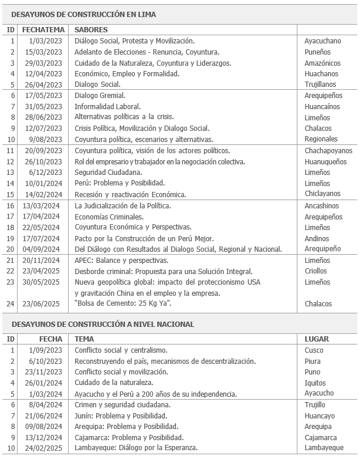
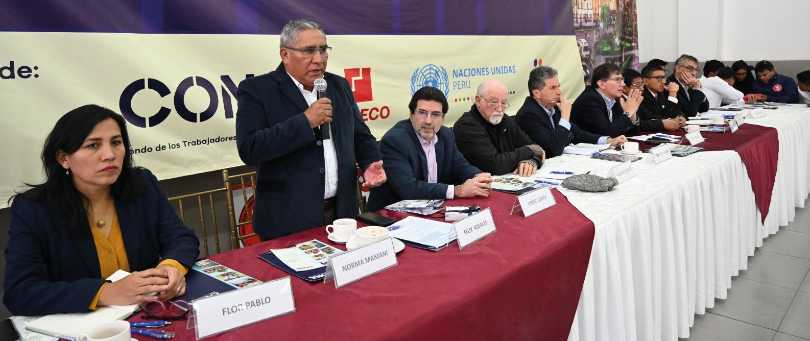
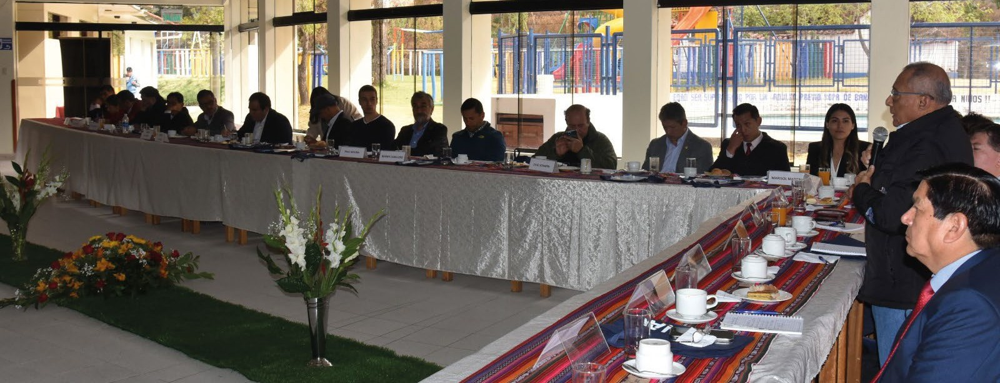

9 PARTE 6: DESAYUNOS DE LA CONSTRUCCIÓN
9.1 NUEVO ESPACIO DE DIÁLOGO
Ante la necesidad de fortalecer el diálogo social en el Perú, la FTCCP y CAPECO, con el respaldo del CONA impulsaron la creación de un nuevo espacio de encuentro y reflexión, los Desayunos de la Construcción, que se han consolidado como un escenario plural e inclusivo donde confluyen representantes de la sociedad civil, líderes de opinión y actores políticos.
Estos encuentros promueven un enfoque participativo y abierto, orientado a la discusión de la realidad nacional y a la búsqueda conjunta de soluciones sostenibles a los desafíos sociales, económicos y laborales. Más allá del debate, los Desayunos de la Construcción buscan fomentar el diálogo constructivo y propiciar acuerdos que contribuyan al desarrollo del país, reafirmando así el valor del consenso como pilar fundamental de la democracia y la gobernabilidad.
Además de servir como un foro para debatir temas críticos, los Desayunos tienen como propósito reforzar las capacidades de los líderes de la construcción civil en el Perú. Su objetivo también es fortalecer no solo sus habilidades para interactuar con actores políticos y sociales, sino también ampliar sus conocimientos sobre diversos aspectos de la realidad nacional.
Un factor clave del éxito de los Desayunos radica en la confidencialidad de lo que se discute en ellos, lo que garantiza un ambiente de mutuo respeto, propicio para el diálogo y para la exposición constructiva de eventuales discrepancias que puedan surgir del intercambio de ideas.
Desde su primera edición el 1 de marzo de 2023, en la sede del CONA en San Isidro, esta reunión ha logrado congregar a destacadas personalidades de diversos sectores. El primer encuentro llevó por título “Diálogo Social, Protesta y Movilización”, un tema especialmente sensible dado el contexto de las manifestaciones ocurridas a nivel nacional contra

Hasta junio 2025, se han realizado 24 desayunos en Lima y 10 en regiones, consolidándose como un espacio de diálogo y aprendizaje. Estos encuentros contaron con apoyo logístico y estratégico del PNUD, Idea Internacional y CONA, promoviendo la descentralización y el fortalecimiento del aprendizaje colectivo.
el Gobierno central, en las que lamentablemente fallecieron 67 personas. Rudecindo Vega, uno de los impulsores de esta iniciativa y exgerente general de CONA, recuerda que existía cierta reticencia en algunos actores para iniciar estos diálogos debido a la compleja coyuntura del momento, además del temor a que la convocatoria no tuviera éxito. Sin embargo, reconocía que escuchar e intercambiar opiniones era fundamental para construir entendimientos y encontrar iniciativas para reducir la polarización y las tensiones sociales.
Como hecho anecdótico, recordó que en ese primer encuentro, los organizadores ofrecieron un desayuno con sabor ayacuchano que logró romper la tensión de los asistentes, quienes expusieron sus puntos de vista y, finalmente, saludaron la iniciativa y el consenso.
9.2 COLABORACIÓN DEL PNUD Y DE IDEA INTERNACIONAL
Hasta junio 2025, se han llevado a cabo 24 Desayunos en Lima y 10 más en diferentes regiones del país. Los encuentros descentralizados han sido posibles gracias al valioso apoyo logístico y estratégico de la Organización de las Naciones Unidas (ONU), a través del Programa de las Naciones Unidas para el Desarrollo (PNUD), y de Idea Internacional.
Vale recordar que, durante uno de los desayunos realizados en 2023 en la capital de la República, Igor Garafulic, entonces coordinador residente de la ONU en Perú, destacó la importancia del formato adoptado en estos espacios de diálogo, resaltando la participación de actores claves como los empresarios de CAPECO y los trabajadores de la construcción civil. Fue a partir de esa experiencia, que surgió la propuesta de extender estos desayunos a las demás regiones del país.
No obstante, los desafíos logísticos y financieros representaban un obstáculo significativo, debido a los costos asociados con transporte, alojamiento y organización. Frente a esta situación, el PNUD brindó su apoyo, cubriendo los gastos operativos relacionados con la realización de los eventos desentralizados. Así, el 1 de setiembre de 2023, se realizó el primer encuentro regional en la ciudad del Cusco. El tema del coloquio fue “Conflicto social y centralismo”.
Al respecto, Garafulic, ha comentado que la participación de la ONU en estos diálogos se basó en la prioridad que tiene esta organización en el Perú de llegar a las regiones más afectadas socialmente en el país, con el objetivo de fomentar la reconciliación, la mediación y el diálogo constructivo. El esfuerzo principal consistía en reunir a diferentes personalidades en una misma mesa de conversación, permitiendo escuchar los diferentes puntos de vista de los participantes. En las convocatorias realizadas en las diversas regiones se incluyó a autoridades locales y representantes de la sociedad civil.
Como parte de este enfoque, se buscó transmitir la exitosa experiencia del Diálogo Social con Resultados que llevan adelante CAPECO y la Federación desde hace veintidós años. Dicho modelo ha demostrado ser efectivo para alcanzar acuerdos significativos, convirtiéndose en un ejemplo valioso de replicar. En este intercambio de ideas se resalta la importancia de extender estas prácticas a otros sectores sociales para propiciar el logro de resultados positivos en diferentes contextos.
Por otro lado, estos eventos también tienen el apoyo del Instituto Internacional para la Democracia y la Asistencia Electoral - IDEA Internacional, organización intergubernamental que apoya la democracia en todo el mundo, que tiene su sede en Suecia y acredita una larga presencia en el Perú. El apoyo brindado por Percy Medina, jefe de Misión de esta entidad para el Perú, ha sido fundamental para facilitar la logística de los eventos, cubriendo parte de los costos relacionados con la organización de los encuentros desentralizados. Este apoyo y la participación activa de ambas entidades han aportado realce y legitimidad a los eventos, atrayendo la atención de distintos sectores sociales, económicos y políticos.
Las intervenciones de representantes de Naciones Unidas han sido siempre conciliadoras, positivas y alentadoras, incentivando a los participantes a involucrarse en un diálogo constructivo. De igual manera, Percy Medina ha compartido su experiencia en múltiples ocasiones, tanto en Lima como en provincias, ofreciendo valiosas recomendaciones sobre la importancia de establecer vínculos efectivos entre organizaciones de la sociedad civil y los actores políticos.

Los desayunos han contado con la participación de más de 600 personalidades en Lima y 450 en provincias, incluyendo congresistas, exministros, académicos, dirigentes gremiales y populares, periodistas, representantes internacionales y expertos en temas clave como seguridad, economías criminales y medio ambiente, consolidándose como espacios de diálogo en diversas regiones del país.
Entre los participantes habituales a los desayunos figuran congresistas de la República, autoridades locales, exministros, representantes de gremios empresariales y laborales, dirigentes de colegios profesionales, personalidades políticas, integrantes de partidos y movimientos de diversas tendencias, académicos destacados en ciencias sociales y ambientalismo, dirigentes populares, comunicadores, líderes de opinión, representantes de organismos internacionales, además de expertos en gestión pública, seguridad ciudadana, economías criminales, medio ambiente, cultura y otros campos relevantes.
Alrededor de 600 personalidades han asistido a los Desayunos en Lima y más de 450 a los de ciudades de provincias como Cusco, Piura, Puno, Iquitos, Ayacucho, Trujillo, Huancayo, Arequipa y Cajamarca.
9.3 TEMAS ABORDADOS
Los temas que se han abordado en una serie de charlas versan en torno al Diálogo social, Diálogo sectorial, Conflicto Social, Seguridad Ciudadana, Judicialización de la Política, Problema y Posibilidad, Coyuntura Regional, Coyuntura y Crisis Política, Dinámica Económica, Gremios laborales, Gremios empresariales, Derechos humanos, Informalidad, Conflictos sociales, Economías Criminales, Medio ambiente y Periodismo de Investigación.

De los diversos desayunos han emergido propuestas que perfilan el camino a seguir en las futuras fases de este espacio de diálogo. Entre las propuestas discutidas se encuentran aquellas incluidas en el Pacto por la construcción de un Perú Mejor impulsado por CAPECO y la FTCCP, buscando su perfeccionamiento con miras a alcanzar el compromiso de los poderes públicos de las organizaciones políticas y de instituciones representativas de la sociedad para llevarlas a la práctica y garantizar su continuidad y legitimidad.
Por ejemplo, en el desayuno descentralizado “Cajamarca: Problema y Posibilidad”, realizado en diciembre 2024, se resaltó que el desarrollo del país exige soluciones construidas de manera conjunta por el Estado, las empresas, los trabajadores, la academia y la sociedad civil. Frente a problemas persistentes como la pobreza, la desnutrición infantil, el empleo informal y las brechas de infraestructura, no es viable continuar actuando de forma fragmentada ni postergar decisiones urgentes.
Cajamarca representa un ejemplo claro de oportunidad. Cuenta con sectores económicos estratégicos como la agricultura, la ganadería (especialmente la vinculada a la producción lechera), el turismo y la minería, con capacidad de impulsar un desarrollo sostenible si se gestionan adecuadamente. Sin embargo, enfrenta limitaciones estructurales como la escasa infraestructura, la desconexión entre la oferta educativa y la demanda laboral, y la falta de integración de cadenas productivas.
Al mismo tiempo, es esencial evitar errores que perpetúan el estancamiento. La formación profesional desvinculada del mercado laboral, la producción de bienes con baja demanda externa, la carencia de infraestructura productiva y social o el desaprovechamiento de recursos naturales que se explotan sin cumplir estándares ambientales adecuados, frenan el progreso. La persistencia de problemas como la desnutrición infantil en una región reconocida por su capacidad de producir alimentos, refleja la urgencia de priorizar una agenda basada en planificación, innovación y especialización regional. El fortalecimiento de clústeres productivos, el valor agregado y la conexión con mercados globales deben ser ejes de una estrategia de desarrollo territorial inclusivo.
Se concluyó en que para alcanzar el objetivo de desarrollo sostenible en la región, y en todo el país, se requiere liderazgo político, compromiso empresarial y participación activa de la ciudadanía organizada. La articulación de esfuerzos entre actores diversos permite construir una agenda común sobre temas clave como infraestructura, integración territorial, formación técnica y empleo digno. El diálogo con resultados, sostenido en el tiempo y con visión de país, es el camino para superar la exclusión y construir un Perú más justo, competitivo e integrado.
En el coloquio dedicado a APEC: Balance y Perspectivas, llevado a cabo en noviembre 2024, se destacó la relevancia de este foro de cooperación económico para el Perú debido a su papel en la facilitación de acuerdos comerciales, la atracción de inversiones y la promoción de la cooperación en sectores estratégicos como infraestructura, innovación y tecnología.
Se explicó que durante las últimas décadas, las economías asiáticas han experimentado un crecimiento acelerado y sostenido, consolidándose como socios comerciales esenciales para el país. Esta relación adquiere una importancia especial en el contexto actual, con proyectos estratégicos como el megapuerto de Chancay. Esta obra de infraestructura, desarrollada en colaboración con China, tiene el potencial de transformar al Perú en un hub logístico regional. La megaestructura facilitará el intercambio comercial entre América del Sur y Asia, fortaleciendo la posición del país como un punto neurálgico en las rutas del comercio internacional.
Sin embargo, se concluyó que el desarrollo del puerto de Chancay no es suficiente. Se necesita construir infraestructura complementaria, como carreteras y ferrocarriles, para conectar al Perú con Brasil, Bolivia y otras regiones de Sudamérica. Además, será necesario impulsar la producción de vivienda social, el equipamiento y la planificación urbanos para satisfacer las demandas habitacionales y de trabajo de la población que será atraída por la actividades económicas vinculadas a la presencia del megapuerto. Esto representará una gran oportunidad para el sector construcción y para las empresas peruanas, que deben participar activamente en estos proyectos.
En este desayuno se coincidió en que el Perú enfrenta el reto de construir una visión de desarrollo basada en un pacto social efectivo, que involucre a todos para evitar que las propuestas queden en simples documentos. Este desafío requiere liderazgos sólidos que impulsen y den continuidad a las iniciativas. Sin una visión compartida, las tensiones entre indignación y paciencia no encuentran equilibrio, y se corre el riesgo de perpetuar el estancamiento.

Estos encuentros impulsan un enfoque participativo y abierto para analizar la realidad nacional y buscar soluciones sostenibles a los desafíos sociales, económicos y laborales. Asimismo, promueven el diálogo constructivo y la generación de acuerdos que aporten al desarrollo del país, reafirmando el consenso como pilar de la democracia y la gobernabilidad.
La gobernanza es un pilar fundamental para enfrentar desafíos críticos como la inseguridad y la delincuencia. Sin estructuras sólidas y alianzas efectivas entre el Estado y sectores empresariales y laborales, las políticas públicas pierden continuidad y efectividad. Una gestión territorial adecuada es clave para atender las necesidades inmediatas y trazar un camino hacia el futuro deseado. Este proceso demanda que entre dichas políticas se incluya aquella dirigida al fortalecimiento del Estado para evitar que los ciclos gubernamentales afecten la continuidad de la acción estatal, que limita el progreso del país.
Otro desafío es incorporar la planificación estratégica como una herramienta efectiva para la gestión pública. Aunque su relevancia quedó clara durante la pandemia, aún no está plenamente integrada en el diseño de políticas en el Perú. Esta planificación debe ser participativa, conectada con la realidad del país, y no limitada a teorías alejadas de su contexto. Sin una estrategia prospectiva que involucre a todos los sectores, el Perú seguirá perdiendo oportunidades de desarrollo.
Además, se dijo que es crucial abordar temas estructurales como la tecnología, la diversificación económica, los clústeres productivos, la infraestructura y la educación. Estos elementos deben articularse en un esfuerzo integral que vincule el comercio internacional con el crecimiento económico sostenible. Para ello, las políticas públicas deben ser ejecutadas eficientemente, asegurando que el crecimiento se traduzca en desarrollo sostenible. El Perú tiene ante sí una tarea compleja pero urgente: diseñar y ejecutar estrategias que transformen el potencial del país en bienestar para su población.
En Seguridad Ciudadana, otro de los grandes temas llevados a cabo, se abordó la lucha contra la inseguridad y el crimen organizado. Se identificó la urgente necesidad de combatir actividades ilícitas como la extorsión y la violencia en la construcción civil, donde las mafias organizadas han establecido prácticas coercitivas que vulneran los derechos laborales y socavan la confianza en las instituciones, como han señalado CAPECO y la FTCCP en su propuesta estratégica para encarar esta aguda problemática social que no solo afectan directamente a los trabajadores, sino que también generan un impacto negativo en la inversión y el desarrollo económico del país.
Además, se expresó la preocupación por el crimen organizado que ha extendido su influencia hacia otros sectores, infiltrándose en actividades formales e informales. Este fenómeno ha creado un entorno de incertidumbre y riesgos que afecta a toda la población, alimentando el crecimiento de economías paralelas y debilitando la capacidad del Estado para garantizar el orden y la seguridad. En este sentido, se comentó que es crucial implementar estrategias integrales que combinen esfuerzos policiales, judiciales y de inteligencia, junto con campañas de sensibilización y educación dirigidas a fortalecer el tejido social, como la que han planteado los gremios de empresarios y trabajadores en el sector construcción.
La respuesta a esto debe ser coordinada y multisectorial. Como ya se ha señalado, en 2017 CAPECO y la FTCCP presentaron al gobierno de entonces la Propuesta para la implementación de una Estrategia Integral contra la Violencia. En dicha estrategia, se reconoce que es fundamental que el Estado, las empresas, las organizaciones sindicales y otras instituciones de la sociedad civil deben trabajar en conjunto para diseñar, poner en marcha y monitorear políticas públicas efectivas, implementar mecanismos de prevención y protección, y garantizar una justicia ágil y transparente.
El impacto de las Economías Criminales e Ilegales también fue un tema de discusión porque se ha convertido en una preocupación creciente, ya que estas actividades están infiltrándose en sectores de la economía formal, debilitando la competencia leal y minando la confianza en las instituciones. Desde el narcotráfico hasta la minería ilegal y el contrabando, estas economías generan flujos financieros paralelos que no solo escapan al control fiscal, sino que también alimentan redes de corrupción y violencia. Este fenómeno perpetúa la informalidad estructural existente, dejando a amplios sectores de la población al margen de los beneficios del desarrollo económico y dificultando la implementación de políticas públicas efectivas.
Frente a esta situación, se propuso una respuesta integral que abarque la mejora de los sistemas de regulación económica, el fortalecimiento de las instituciones de justicia y seguridad y la implementación de estrategias que promuevan la formalización de actividades productivas. Además, se planteó establecer mecanismos de cooperación entre los sectores público y privado para combatir estas economías ilícitas y reducir su influencia en las dinámicas sociales y económicas del país. Solo mediante un enfoque coordinado y sostenible será posible mitigar los efectos devastadores de estas actividades en el desarrollo y la cohesión social.
En el marco del tema Economía, Empleo y Formalidad, se destacó la necesidad de construir una visión integral de desarrollo sostenible que tenga como eje principal un crecimiento continuo del Producto Bruto Interno (PBI). Esta evolución debe ir acompañada de una distribución equitativa de los beneficios económicos, asegurando que los avances se traduzcan en mejoras tangibles en la calidad de vida de toda la población. Reducir las desigualdades existentes no solo es un imperativo ético, sino también una estrategia clave para fortalecer la cohesión social y garantizar la estabilidad a largo plazo.
Un aspecto fundamental dentro de esta visión es la generación de empleo digno y sostenible. El acceso a trabajos formales, con derechos laborales garantizados, no solo impulsa la inclusión económica, sino que también contribuye a fortalecer el tejido social y reducir los niveles de pobreza. Asimismo, se resaltó la importancia de fomentar sectores estratégicos que puedan absorber intensivamente mano de obra, al tiempo que se promueven iniciativas de capacitación y educación para preparar a la población frente a las demandas de un mercado laboral en constante transformación.
En Reconstruyendo el país, mecanismos de descentralización se resaltó el fortalecimiento de la descentralización como pilar esencial para lograr un desarrollo inclusivo. Se puntualizó que es crucial adoptar una perspectiva que reconozca y valore las realidades y necesidades del país, más allá de la hegemonía de la capital. Esto requiere avanzar hacia una desconcentración auténtica, en la que se compartan poder y recursos de manera equitativa entre todas las regiones, permitiendo una respuesta más eficaz y adecuada a las demandas locales.
La descentralización no solo implica transferir competencias administrativas, sino también garantizar que las regiones cuenten con los recursos financieros, técnicos y humanos necesarios para gestionarlas. Se trata de una transferencia real de poder, que permita cerrar las brechas de desigualdad territorial, promoviendo oportunidades equitativas para todas las comunidades. En este proceso, se concluyó que es vital que el Estado diseñe políticas públicas con una visión territorial integrada, que respete la diversidad cultural, social y económica del país, logrando así un crecimiento más equilibrado y justo para todas las regiones del Perú.
Se resaltó que la planificación urbana estratégica es un elemento clave para garantizar un desarrollo equilibrado. La falta de planes bien definidos propicia la expansión desordenada de las ciudades, fomentando las invasiones y el tráfico ilegal de tierras, fenómenos que afectan tanto al orden social como al desarrollo económico. Por ello, una verdadera descentralización debe incluir la implementación de políticas urbanas integrales que prevengan estas situaciones y promuevan un uso racional del territorio.
En el desayuno cuyo tema fue Diálogo Social se reafirmó que éste es un pilar fundamental para enfrentar los desafíos estructurales del país y construir consensos que permitan avanzar. El diálogo se planteó como un proceso participativo y plural, que debe integrar a los diversos actores políticos, sociales y económicos, reconociendo sus particularidades y promoviendo un entorno de respeto mutuo y cooperación. En un contexto de tensiones sociales y desconfianza institucional, el diálogo social se presenta como una herramienta clave para resolver conflictos de manera pacífica y concertada.
Fortalecer este instrumento implica institucionalizar espacios de encuentro donde las voces de todas las regiones y sectores sean escuchadas, especialmente las del Perú profundo, que históricamente han estado relegadas. Estos espacios deben ser accesibles, transparentes y orientados a que las necesidades reales de la población encuentren soluciones efectivas en las políticas públicas.
En este contexto, la experiencia de ventidós años de negociación colectiva entre la Federación y CAPECO representa un ejemplo exitoso de cómo el diálogo social puede transformar las diferencias en consensos efectivos. Su relevancia no solo radica en la capacidad de ambas partes para llegar a acuerdos, sino también en la implementación de acciones concretas que fomentan el desarrollo del sector. Este modelo demuestra que, cuando los intereses comunes se priorizan y las expectativas legítimas se reconocen, es posible construir relaciones laborales sólidas. La suscripción del Pacto por la construcción de un Perú mejor es una prueba tangible de la eficacia del mecanismo del diálogo para encontrar soluciones a los problemas que afectan a la economía y a la sociedad peruana.

Los Desayunos de la Construcción han permitido a la FTCCP y a CAPECO articular una voz conjunta, cohesionar sus acciones e influir de manera efectiva en los temas relevantes para el sector construcción y sus afiliados, ampliando además la discusión hacia perspectivas que trascienden lo estrictamente sectorial.
Esta experiencia ha abierto camino hacia otros espacios de concertación. Ejemplos notables incluyen la coincidencia de opiniones en temas relevantes que se ha producido entre diferentes instituciones laborales y empresariales como la Confederación General de Trabajadores del Perú (CGTP), la Confederación Nacional de Instituciones Empresariales Privadas (CONFIEP), la Federación Nacional de Trabajadores de Agro Industria y Afines (FENTAGRO), la Sociedad Nacional de Industrias (SNI) y la Asociación de Gremios Productores Agrarios del Perú (AGAP), entre otras.
Esto requiere el compromiso de todas las partes para implementar acuerdos alcanzados y evaluar continuamente su impacto. En este sentido, el diálogo no solo se convierte en un instrumento de resolución de conflictos, sino también en un motor para construir un país más justo, cohesionado y preparado para enfrentar los retos del presente y del futuro.
Otro tema tratado fue Judicialización de la Política. En este desayuno se expuso la diferencia entre la judicialización de la política y la politización de la justicia. A pesar que son fenómenos relacionados, presentan problemáticas distintas que requieren un análisis crítico. La judicialización ocurre cuando sentencias de órganos jurisdiccionales, como el Tribunal Constitucional (TC), tienen un impacto directo en la formulación o implementación de políticas públicas. Esto puede llevar a que el TC actúe tomando decisiones con implicaciones políticas, lo cual representa un riesgo para la separación de poderes y puede distorsionar su función constitucional. En algunos casos, este tipo de intervención ha afectado el equilibrio de poderes, transformando las disputas políticas en contiendas legales y desviando la atención de los debates democráticos hacia los tribunales.
Por otro lado, la politización de la justicia implica la interferencia de actores políticos en procesos judiciales o en la selección, ratificación y sanción de jueces y fiscales. Esta situación puede manifestarse de diversas formas, como el vínculo directo de actores políticos con funcionarios judiciales o la actuación de jueces con marcada inclinación política. Estas prácticas comprometen la imparcialidad y afectan la legitimidad del sistema judicial, ya que las decisiones dejan de basarse en la ley y se convierten en instrumentos de presión o venganza política.
El impacto de la judicialización de la política es significativo en el equilibrio económico y social de un país, especialmente en un panorama nacional donde la estabilidad institucional es crucial para el desarrollo. Al trasladar las disputas políticas a los tribunales se genera incertidumbre y se afecta directamente la confianza de los inversores, la efectividad de las políticas públicas y la cohesión social. Los participantes coincidieron en que esto podría conducir a una parálisis en la toma de decisiones, retrasando proyectos clave y afectando sectores estratégicos como infraestructura, energía o desarrollo social.
En términos económicos, la judicialización puede desalentar la inversión privada al crear un entorno imprevisible. Las empresas suelen necesitar un marco legal estable y predecible; cuando los conflictos políticos se judicializan, se incrementa la percepción de riesgo. Además, la prolongación de procesos judiciales relacionados con proyectos de inversión puede llevar a la pérdida de oportunidades de desarrollo para regiones enteras.
El desayuno Conflicto social y movilización llevado a cabo en Puno expuso una seria realidad. En noviembre de 2023, la región enfrentaba una compleja crisis social y económica que demandaba atención inmediata. Los conflictos sociales estaban vigentes, agravados por la limitada efectividad del diálogo entre las comunidades y las autoridades. En el diálogo surgido en el evento, se subrayó la necesidad de implementar medidas preventivas para evitar una escalada de tensiones.

Los Desayunos de la Construcción impulsan un diálogo transformador, integrando diversos actores del sector para abordar temas de interés común desde diferentes perspectivas. Este espacio inclusivo fortalece la legitimidad y el alcance de los acuerdos alcanzados, consolidando una participación multisectorial más efectiva y colaborativa.
En el encuentro se destacó que el respeto a los derechos humanos sigue siendo una asignatura pendiente. La percepción de abandono y marginación en la región es alta, alimentada por la idea de que Puno ha sido históricamente relegada por el Estado.
Un ejemplo de la gravedad de la situación social que vivió la región durante los momentos críticos de las manifestaciones, fue que pequeños artesanos permanecieron 120 días sin generar ingresos, debido a la falta de apoyo gubernamental y al estancamiento del diálogo. Su movilización no solo buscó mejores condiciones laborales, sino que también denunció problemas estructurales como la discriminación y el racismo, evocando prácticas de explotación similares a las de épocas pasadas.
En ese marco de debate, se llegó a la conclusión de que la centralización del poder en Lima es otro de los grandes problemas que afectan a Puno y a otras regiones del país. Para superar esta desigualdad estructural, se coincidió en que es fundamental apostar por una descentralización real y efectiva que priorice el diálogo, el respeto a las regiones y el acceso equitativo a recursos y oportunidades. Esta medida busca combatir la percepción de que las decisiones importantes solo pueden tomarse desde la capital, perpetuando la desigualdad.
Otro inconveniente que surgió del diálogo fue la corrupción y la falta de una adecuada regulación empresarial que son barreras significativas para el desarrollo de la región. Empresas que operan bajo diferentes nombres para evadir responsabilidades y cometer irregularidades se mantienen activas, lo que exige una profunda reforma administrativa y la aplicación de sanciones contundentes que protejan los intereses de la población.
La lucha contra la delincuencia, el contrabando, la minería ilegal y el narcotráfico es otro desafío urgente en Puno. Abordar estos problemas requiere no solo una acción más eficiente del Estado, sino también el empoderamiento de las comunidades locales. Las mujeres campesinas, en particular, desempeñan un papel crucial en la economía regional, que buscan empoderarse económicamente y deben ser reconocidas y respaldadas como agentes clave para el desarrollo.
Puno, con su riqueza cultural y su potencial económico, demanda una respuesta integral que reconozca sus necesidades y potencie sus capacidades. Enfrentar los desafíos de derechos humanos, descentralización, corrupción y seguridad no solo constituyen una deuda histórica, sino también una oportunidad para construir un futuro más equitativo para sus ciudadanos.
El desayuno Cuidado de la Naturaleza, llevado a cabo en Iquitos, planteó que, para alcanzar un desarrollo sostenible, es fundamental reconocer la enorme contribución de la naturaleza en el bienestar social y económico del país. ¿Valoraremos nuestros recursos naturales o seguiremos destruyéndolos? Este dilema no solamente se refiere a las actividades ilícitas, sino también a las políticas y proyectos que se impulsan en nombre del desarrollo.
Un ejemplo reciente se observó en Iquitos, donde las autoridades nacionales, regionales y municipales suspendieron concesiones relacionadas con cuerpos de agua en el río Nanay, destacando la importancia de la consulta previa a la población. Sin embargo, el desafío continúa en otras áreas, como la cuenca del Marañón, donde es esencial revertir la práctica de otorgar concesiones sin la debida consulta a la población local.
Loreto es considerado uno de los ecosistemas más valiosos del mundo, alberga una biodiversidad única que incluye bosques, fuentes de agua dulce, flora y fauna. La protección de estos recursos debe considerarse un pilar central en cualquier política de desarrollo. ¿Qué ha ocurrido con las cuatro cuencas de Loreto, afectadas por más de 50 años de explotación petrolera? A pesar de su riqueza natural, la región ha mostrado un crecimiento económico muy por debajo del promedio nacional en los últimos cinco años. Sectores clave como la manufactura y la producción agroforestal han sido relegadas, mientras la minería ilegal continúa depredando los bosques y contaminando las fuentes de agua, especialmente en la provincia de Castilla.
La protección de los bosques amazónicos es esencial debido a su papel como “pulmones” del planeta. Iniciativas recientes, como la creación de una comisión multisectorial para el desarrollo sostenible de la Amazonía peruana, representan un paso positivo, aunque requieren seguimiento y acciones concretas. La región de Loreto, con 34 millones de hectáreas de bosque, enfrenta una pérdida constante de cobertura forestal, particularmente en Ucayali y otras provincias. La minería ilegal, junto con la contaminación química por mercurio, plantea riesgos ambientales graves que demandan atención inmediata. Estos objetivos deben ser compatibilizados con la necesidad de que el territorio amazónico sea acondicionado mediante infraestructura y equipamiento que permita ofrecer servicios básicos, conectividad, vivienda, educación, salud y oportunidades laborales a la población y mejoras en la competitividad de las actividades productivas.
En la ciudad de Chiclayo se llevó a cabo el desayuno Diálogo por la Esperanza, en el que se resaltó que la región Lambayeque, destaca por su posición estratégica en la costa peruana y su conexión natural con los principales circuitos comerciales del Pacífico. Su potencial agroexportador, reflejado en proyectos como el de Olmos, y la existencia de una masa laboral joven y calificada, la convierten en una pieza clave del desarrollo nacional. Además, según el Índice de Competitividad Regional elaborado por el Instituto Peruano de Economía, Lambayeque es actualmente la sexta región más competitiva del país y la primera del norte, lo que refleja tanto sus fortalezas como sus posibilidades.
Sin embargo, esta proyección positiva contrasta con profundas debilidades estructurales que frenan su desarrollo integral. Uno de los principales problemas es la creciente inseguridad generada por el avance de las economías criminales. La región ha sido escenario de un aumento sostenido de la extorsión, el narcotráfico y otras actividades ilícitas que se han infiltrado incluso en sectores estratégicos como la construcción. La presencia de más de una docena de bandas criminales operando en la región ha puesto en riesgo a trabajadores, empresarios y ciudadanos de a pie generando temor, paralizando proyectos y erosionando la confianza en las instituciones.
Otro problema crítico mencionado en el encuentro, es la fragilidad institucional y la débil articulación entre los diferentes niveles de gobierno. La baja ejecución presupuestal y la falta de planificación territorial limitan el aprovechamiento de los recursos disponibles, mientras que muchos proyectos de infraestructura permanecen inconclusos o mal diseñados. A ello se suma el abandono de servicios esenciales como agua potable, alcantarillado y vivienda, a pesar de la existencia de fondos asignados, como los más de 1,800 millones de soles destinados al drenaje pluvial de Chiclayo, cuya construcción aún no se ha iniciado, pese al tiempo transcurrido desde la aprobación del Plan de Reconstrucción con Cambios.
El crecimiento urbano desordenado es también una amenaza real para la región, debido a la ausencia de planificación territorial, lo que facilita la proliferación de construcciones informales, ocupaciones sin servicios y urbanización sin control. Sin una planificación urbano-territorial sólida, basada en diagnósticos técnicos y en la participación ciudadana, como lo dispone la Ley de Desarrollo Urbano Sostenible, Lambayeque corre el riesgo de reproducir los errores de otras ciudades que padecen graves problemas estructurales.
A estos desafíos se suma la necesidad urgente de impulsar la formalización del trabajo. El sector construcción y la agricultura concentran un alto número de trabajadores informales sometidos a condiciones laborales precarias, sin acceso a derechos básicos como seguridad social, vacaciones o gratificaciones. Esta situación no solo vulnera derechos, sino que también perjudica la productividad regional. Del mismo modo, preocupa la proliferación descontrolada de sindicatos sin legitimidad ni fiscalización, algunos incluso con vínculos con actividades ilícitas, lo que socava el sindicalismo representativo y la paz laboral.
La educación representa otro eje crítico. Las cifras son alarmantes: solo dos de cada diez estudiantes de segundo de secundaria entienden lo que leen, y apenas uno de cada diez docentes lee más de seis libros al año. Esta brecha educativa limita las posibilidades de desarrollo de las nuevas generaciones, perpetuando círculos de pobreza, desigualdad y exclusión. Sin una mejora sustancial en el sistema educativo, cualquier avance en infraestructura o en economía se verá seriamente limitado.
Frente a este complejo panorama, quienes participaron en el Desayuno de Construcción en Chiclayo coincidieron en que el camino es el diálogo social articulado y sostenido. Desde hace más de dos décadas, los gremios de trabajadores de la construcción y el sector empresarial vienen desarrollando espacios de encuentro como este, con el objetivo de construir una agenda común basada en el consenso, la ética y el compromiso con el país. En esa línea, se suscribió un Pacto por la Construcción de una Región Lambayeque más Competitiva e Inclusiva, entre los sindicatos de trabajadores en construcción civil en la región Lambayeque, afiliados a la FTCCP y la Asociación Regional Lambayeque de la Cámara Peruana de la Construcción, que ha incluido seis objetivos estratégicos de desarrollo y cuya concreción requiere la articulación de esfuerzos entre autoridades locales y regionales, sociedad civil, colegios profesionales, sindicatos y empresarios.

El diálogo dejó de asumirse como una práctica aislada para consolidarse como un espacio amplio e integrador que convoca a diversos sectores. Esta evolución ha permitido que los temas de interés común se examinen desde perspectivas complementarias, lo que refuerza la legitimidad y el alcance de los consensos construidos.
Uno de los aspectos centrales de este pacto es la necesidad de contar con una planificación territorial participativa y profesional. Proyectos como el Terminal Marítimo de Puerto Eten o el nuevo corredor logístico para la región deben articularse con un Plan Regional de Infraestructura y un Plan de Desarrollo Regional de largo plazo, que permitan orientar las inversiones y evitar obras inconexas o con redundantes. Esta visión debe superar la lógica centralista de planificación desde Lima y responder a las características propias del territorio lambayecano, sus cuencas, su geografía y su potencial productivo.
Asimismo, en el evento se hizo un llamado a mejorar la gobernanza democrática. La fragmentación política, con más de 40 partidos sin representación territorial sólida, debilita la toma de decisiones e impide el diseño de políticas públicas coherentes. La sociedad civil debe jugar un rol activo en la vigilancia, la fiscalización y la propuesta de soluciones, para evitar que los intereses particulares y la corrupción sigan imponiéndose sobre el bien común.
El fortalecimiento de la institucionalidad laboral también es una prioridad. Se tomó conocimiento que, desde la Gerencia Regional de Trabajo, se ha iniciado un proceso de depuración de seudo organizaciones sindicales, de fortalecimiento de la representación gremial de los trabajadores, de promoción del empleo decente y de formación profesional para jóvenes que desean ingresar al campo laboral de la construcción y de trabajadores con experiencia en la actividad constructora. Iniciativas como la puesta en marcha del Programa Nacional de Formalización Laboral en Lambayeque, el índice de empleabilidad universitaria o la certificación de competencias laborales son señales positivas que deben ser ampliadas con el apoyo del sector privado y los gobiernos locales.
Al final del encuentro, se llegó a la conclusión de que la región Lambayeque posee las condiciones para constituirse en un modelo de desarrollo regional para el país. Pero, para que eso ocurra, se debe afrontar con decisión los retos que la aquejan: inseguridad, informalidad, corrupción, debilidad institucional y exclusión social. La única forma de lograrlo es a través del diálogo social permanente, la planificación profesional, la coordinación multisectorial y el compromiso político. Solo así se podrá transformar el potencial de la región en una realidad tangible que beneficie a sus habitantes.
En Lima también se desarrolló el Desayuno de la Construcción dedicado a la Nueva geopolítica global: Impacto del proteccionismo de Estados Unidos y la gravitación china en el empleo y la empresa. En un escenario internacional marcado por el ascenso de China y el repliegue proteccionista de Estados Unidos, el Perú enfrenta el reto urgente de redefinir su estrategia de inserción global y fortalecer su política económica interna. La desaceleración económica, la informalidad estructural y la crisis de gobernabilidad colocan al país en una posición de vulnerabilidad frente a una transformación geopolítica que impacta directamente en el empleo, las inversiones y la estructura productiva nacional.
El proteccionismo estadounidense y la competencia comercial con China revelan una disputa hegemónica que trasciende lo económico. En este contexto, el Perú no puede limitarse a una política exterior reactiva ni a una economía basada únicamente en exportaciones primarias. Se necesita una visión estratégica que priorice la diversificación productiva, el desarrollo de industrias y servicios en los que el país posee potencial competitivo y la integración inteligente a cadenas de valor globales, aprovechando recursos propios y capacidades instaladas.
A nivel interno, la informalidad sigue siendo una de las principales barreras para el desarrollo. En sectores como la construcción, el agro o el comercio, millones de trabajadores se encuentran al margen del sistema laboral formal, sin acceso a derechos, protección ni oportunidades de capacitación. Esta situación no solo genera desigualdad, sino que también debilita la productividad nacional y la sostenibilidad del sistema económico. Superar la informalidad requiere un pacto fiscal que eleve la recaudación tributaria, impulse la inversión pública estratégica y fortalezca la institucionalidad laboral.
En esta línea, resulta evidente que a pesar del crecimiento económico alcanzado durante los últimos treinta años, sobre todo debido a los altos precios de los minerales y la apertura comercial, el bienestar no ha llegado a todos los ciudadanos ni se ha logrado reducir las desigualdades ni alcanzar la integración territorial de nuestro país. Mientras una parte de la población accede a estándares de vida similares a Europa, otra vive en condiciones similares a las de países africanos. Esta brecha evidencia la necesidad de una política pública orientada a la equidad, la cohesión social y el cierre efectivo de brechas regionales.
Desde una perspectiva sectorial, se propone avanzar hacia el mejor aprovechamiento de recursos minerales, en especial el cobre, y estimular el desarrollo actividades productivas con alto valor agregado y en las que el Perú presenta potencialidades para competir globalmente como la construcción, la textilería, la medicina natural, la industria forestal y el turismo. La gastronomía peruana se presenta como un caso de éxito, porque ha sido capaz de valorizar nuestros productos y técnicas culinarias, convertirlos en símbolos de la identidad cultural del país y articular cadenas de valor desde el productor hasta los mercados internacionales, lo que debe replicarse en otras actividades económicas. En este marco, es clave priorizar la inversión en conocimiento, planificación y ciencia aplicada al desarrollo económico.
La situación política, por otro lado, constituye una de las principales amenazas al progreso sostenido. El sistema de partidos fragmentado, la ausencia de liderazgos con visión de país y la desconexión entre el Estado y la ciudadanía han erosionado la legitimidad institucional. Se plantea como indispensable una reforma político electoral que garantice el acceso meritocrático a los espacios de poder, promueva que los partidos políticos cuenten con vida orgánica y perfeccione los mecanismos de elección para garantizar que los gobernantes gocen de una mayor representatividad. La calidad de la democracia y la gobernabilidad dependen de la solidez del sistema político.
En este proceso, la formalización de la economía y del empleo se convierte en una tarea prioritaria. No solo por su impacto social, sino porque permite hacer más eficientes los sectores productivos y garantizar condiciones básicas de sostenibilidad. Para ello, es indispensable establecer estrategias integrales multidisciplinarias, entre las cuales aquellas dirigidas a controlar la expansión de las ciudades, impulsar la vivienda formal y planificar adecuadamente el crecimiento urbano, integrando servicios básicos, equipamientos productivos, medios de transporte y espacios públicos.
Enfrentar los desafíos del siglo XXI exige un nuevo tipo de liderazgo y de institucionalidad. Ya no basta con reformas sectoriales aisladas ni con políticas cortoplacistas. Se necesita un gran Pacto Nacional por el Desarrollo, articulado entre Estado, partidos políticos, gremios empresariales y laborales, instituciones académicas y otras entidades representativas de la sociedad civil. Este acuerdo debe orientarse a construir una economía más equitativa, productiva y resiliente, con una presencia estatal efectiva en el territorio y una gobernanza basada en el consenso social.
Finalmente, la redefinición del rol del Estado, la planificación territorial participativa, la reactivación de políticas de desarrollo productivo y el fortalecimiento del tejido social deben ser los pilares de una nueva estrategia de desarrollo. La experiencia internacional demuestra que para alcanzar el progreso sostenible es necesario promover una economía de mercado competitiva y simultáneamente formular y ejecutar políticas públicas inteligentes, consensuadas y orientadas al bien común. El Perú tiene las capacidades, los recursos y la tradición de diálogo para emprender esta ruta. Lo que falta es la decisión colectiva de hacerlo posible.
Los Desayunos de la Construcción han permitido el intercambio de ideas entre diversos actores del sector que, finalmente, ha generado una serie de cambios favorables. En ese marco, se observa que la transformación del diálogo ha sido evidente en los últimos años, reflejando un cambio en su naturaleza y propósito. El diálogo ha dejado de ser una práctica aislada para convertirse en un espacio inclusivo y participativo que involucra a múltiples sectores. Este cambio ha permitido que las conversaciones aborden temas de interés común desde diferentes perspectivas, lo cual fortalece la legitimidad y el alcance de los acuerdos alcanzados.
9.4 UNA VOZ MÁS FUERTE
El fortalecimiento de las organizaciones ha sido clave en este proceso. Tanto la FTCCP como CAPECO han demostrado una mayor cohesión y capacidad de acción. Esta unión ha facilitado que ambas organizaciones tengan una voz más fuerte y que puedan influir de manera efectiva en los temas relevantes para el sector construcción y para sus afiliados.
La creación de espacios de reflexión ha sido otro pilar en esta transformación. Gracias a una plataforma consolidada de análisis y discusión, se ha logrado trascender los límites estrictamente sectoriales, permitiendo la convergencia de diversas perspectivas.
La representación política también ha jugado un rol importante en el proceso de diálogo. Se ha conformado un grupo de congresistas de distintas bancadas que han participado de los Desayunos de Construcción y que están comprometidos con este proceso de diálogo y consenso. Estos representantes están dispuestos a promover iniciativas legislativas y a coordinar con entidades públicas para atender las demandas surgidas en estos encuentros, fortaleciendo así la capacidad de incidencia de los gremios en el ámbito legislativo.
El apoyo internacional ha sido una señal del impacto que ha tenido esta nueva dinámica de diálogo. Organismos como la ONU, Idea Internacional y otros han mostrado interés en los Desayunos de Construcción, reconociéndolos como un modelo de diálogo social con resultados. Este respaldo no solo otorga visibilidad a las iniciativas locales, sino que también permite acceder a experiencias y conocimientos de otros países, enriqueciendo la práctica del diálogo en el sector. La nueva representante residente de Naciones Unidas, Rossana Dudziak, quien asumió el cargo en octubre 2024, ha expresado la idea de seguir colaborando con la promoción del diálogo.
Además, de tener un impacto significativo en el fortalecimiento del sector y en el desarrollo del diálogo social en el país, otro de sus principales logros ha sido la consolidación de la FTCCP como un actor clave en la representación de los trabajadores del sector y en la defensa de sus derechos. Resalta, también, la interconexión personal entre los dirigentes de la FTCCP y los actores políticos. Este acercamiento permite que los representantes de la Federación compartan sus perspectivas y preocupaciones directamente con quienes toman decisiones, fortaleciendo así el vínculo entre los gremios y el ámbito político. En suma, se trata de compartir con quienes ejercen el poder real en la sociedad. Este punto de encuentro también ha demostrado que el diálogo entre posturas opuestas es posible y, además, puede ser altamente productivo.
Los Desayunos de Construcción han destacado el potencial de las propuestas de CAPECO y la FTCCP para influir en las decisiones del gobierno a nivel nacional. Esta actividad se ha consolidado como un espacio de creación colectiva y diálogo transformador, con capacidad para generar un impacto positivo en la sociedad peruana.
Los dirigentes representativos de los gremios laborales y empresariales han identificado áreas de convergencia en asuntos de alcance más amplio que el vinculado al campo laboral y cómo llevar estas discusiones al ámbito nacional. Este logro representa un avance significativo, dado que las propuestas inicialmente circunscritas a las relaciones de trabajo adquieren relevancia en la formulación de políticas a nivel nacional, tal como se evidencia en las diez estrategias propuestas en el “Pacto por la construcción de un Perú Mejor”.
En estos Desayunos de la Construcción se ha tenido la posibilidad de contar con diversas voces entre las que destacan las de Carlos Anderson, Diana Álvarez Calderón, Richard Arce, Rolando Breña Pantoja, Carlos Bruce, Humberto Campodónico, Enrique Cornejo Ramírez, Oscar Dancourt, Jorge Del Castillo, Lourdes Flores Nano, Pedro Franke, Igor Garafulic, Víctor Ándres García Belaúnde, Ricardo Gieseke, Mariano González, Juan José Gorriti, Hernando Guerra García, Max Hernández, Miguel Hidalgo, Juan Jiménez Mayor, Pedro Pablo Kuczynski, Yonni Lezcano, Carolina Lizárraga Mayor, Diana Miloslavich Túpac, José Murgia, Rómulo Mucho, Carlos Neuhaus, Flor Pablo, Susel Paredes, Marisol Pérez Tello, Francisco Sagasti, Juan Sheput, Alfredo Thorne, Carolina Triveli, Rudecindo Vega, Fernando Villarán, entre otros.
9.5 DESAYUNOS DE CONSTRUCCIÓN
9.5.1 Encuentros que promueven el diálogo
Por: Francisco Sagasti Hochhausler. Expresidente de la República del Perú. Ingeniero industrial con maestría en Ingeniería Industrial por la Universidad de Pennsylvania y doctorado en Ciencias de Sistemas Sociales por la Wharton School. Ha sido asesor en el Instituto Nacional de Planificación y jefe de Planeamiento Estratégico en el Banco Mundial. Es fundador del FORO Nacional Internacional. Fue congresista y presidente del Congreso en 2020.
Lima, 10 enero 2024 (*)
Los desayunos de la construcción se han convertido en espacios fundamentales para reflexionar y dialogar en un contexto marcado por una profunda crisis política y de liderazgo. En estos encuentros se analiza el impacto de las decisiones políticas tomadas por los principales partidos en el Ejecutivo y el Congreso.
Estos encuentros promueven el diálogo como herramienta esencial para superar divisiones y encontrar soluciones prácticas y sostenibles. Estos foros subrayan la necesidad de construir consensos que permitan abordar los desafíos del país con responsabilidad y visión a largo plazo.
La importancia de estos espacios radica en su capacidad para fomentar el respeto mutuo, la aceptación de las diferencias y la creación de una agenda común basada en políticas públicas responsables. A través de estas discusiones se busca reforzar la institucionalidad democrática, establecer reglas de juego estables y promover medidas programáticas que garanticen la sostenibilidad del país.
Por ejemplo, en el ámbito de la seguridad, los desayunos abordan propuestas equilibradas que combinen el respeto por los derechos humanos con estrategias efectivas para combatir la delincuencia. También se destaca la necesidad de implementar programas tributarios justos y de diseñar estrategias gubernamentales que respondan a las demandas de todos los sectores de la sociedad.
Estos encuentros no solo permiten evaluar los retos históricos superados, como el terrorismo, sino que también invitan a imaginar un futuro mejor para el país. La reinstitucionalización democrática, mediante la elaboración de leyes y reformas consensuadas, se presenta como un objetivo central.
Lejos de ser solo un espacio de conversación, los desayunos de la construcción representan un llamado a construir una visión compartida de futuro, indispensable para el avance colectivo y la consolidación de un Perú más justo y próspero.
(*) Reseña de su participación en el desayuno número 14: Perú: Problema y Posibilidad
9.5.2 Capacidad de discrepar en ideas sin descalificar
Por: Carlos Neuhaus Tudela, Empresario y político. Administrador de empresas, graduado en Ciencias Administrativas por la Universidad de Lima, con maestrías en Administración de Empresas y Negocios Internacionales en Estados Unidos. Fue presidente del Comité Organizador de los Juegos Panamericanos y Parapanamericanos Lima 2019. En 2023, asumió la presidencia del Partido Popular Cristiano (PPC).
Lima, 17 abril 2024(*)
Los desayunos de la construcción se presentan como espacios indispensables para reflexionar sobre la crisis institucional que atraviesa el país y para abordar los retos más urgentes de manera colectiva.
Uno de los principales valores de estos encuentros radica en la promoción de relaciones personales basadas en el respeto mutuo. La capacidad de discrepar en ideas sin descalificar a las personas fomenta un ambiente de debate constructivo, donde el diálogo se convierte en una herramienta clave para plantear ideas y explorar soluciones viables.
La criminalidad, la corrupción y la delincuencia, identificadas como los principales enemigos del país, encuentran en estos foros un espacio para su discusión prioritaria, con el objetivo de diseñar estrategias que permitan enfrentarlas con eficacia y enfoque integral.
Además, los desayunos destacan la importancia de la acción y el progreso continuo. La reflexión sobre el valor de avanzar, incluso frente a posibles tropiezos, refuerza la necesidad de adoptar medidas concretas que impulsen el desarrollo y superen los obstáculos.
También se pone en evidencia el impacto positivo de experiencias exitosas, como la eficiente organización logística del sector privado en el tema de las vacunas, que sirve como ejemplo de cómo la gestión adecuada puede marcar la diferencia en momentos críticos.
Estos encuentros subrayan la relevancia de construir una agenda mínima enfocada en la reinstitucionalización democrática. Fortalecer las instituciones y garantizar un marco estable de gobernabilidad son tareas fundamentales que encuentran en este espacio el terreno propicio para su discusión.
La colaboración y el diálogo que se promueven en los desayunos de la construcción resultan esenciales para alcanzar consensos efectivos. Solo a través de una visión compartida y un esfuerzo colectivo será posible avanzar hacia soluciones sostenibles que beneficien al país en su conjunto. Estos espacios invitan a imaginar y construir un futuro mejor, basado en el entendimiento y la acción conjunta.
(*) Reseña de su participación en el desayuno número 17: Economías Criminales